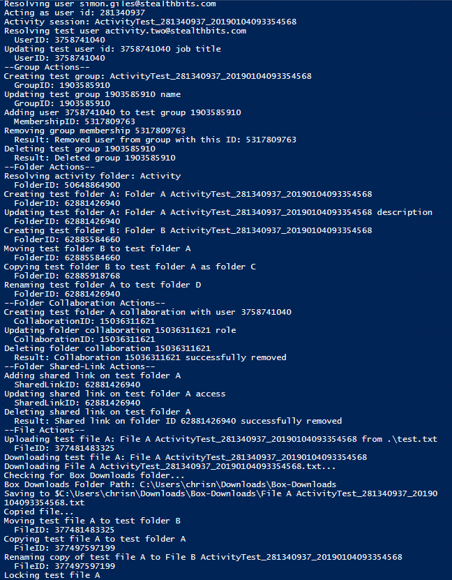
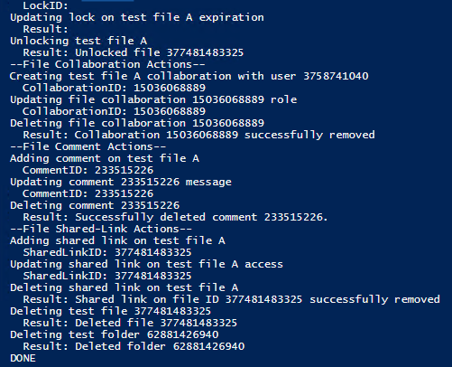
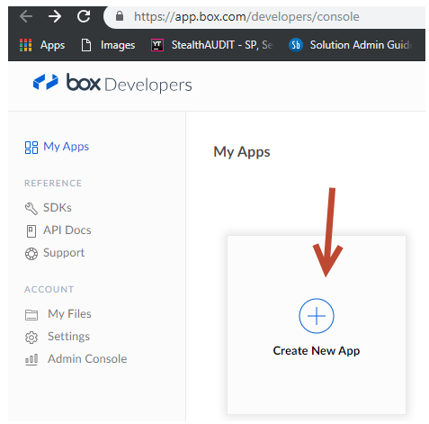
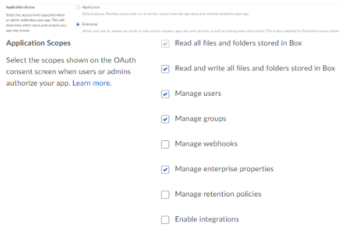

Summary: Coming in version 8.3 of StealthAUDIT will be the ability to collect Box Activity, for the purpose of demoing this especially in test environments there is an Activity Generation script that can be run to generate some activity.
Issue: When demoing the
StealthAUDIT for Box Activity you're going to want a decent amount of data to demo and
during a POC it's common that you'll be scanning a test environment which may or may not
have a sufficient amount of activity. This tool will generate a good amount of activity
which our DC can go ahead and scan providing a solid data set for StealthAUDIT to report
on.
This script will take approximately 2 minutes to run and will create and
subsequently delete everything it has created, all activity that is generated will be done
by the test user which was created. Everything this script does is described in PowerShell
while it's running. See screenshots below of entirety of script actions:


Instructions:
Configuring the json.config file:
- Account with Box enterprise admin or co-admin. Requires access to the dev console of the Box enterprise.
- Register a new Custom App in Box here: Link (Name doesn't matter but whatever it is named will need to be replaced in the instructions piece of this document below, we named our BoxCLI)

- Do not use a developer token. Choose Custom Application
- Authentication Method: OAuth 2.0 credentials (Should be generated automatically)
- Application Access: Enterprise

- Application Scopes: (Everything except: "Manage webhooks", "Manage retention policies", and "enable integrations".)
- Advanced features: Both �Perform actions as users and Generate user access tokens.
- Add and manage public keys: Generate a public/private keypair (Sometimes when clicking generate the json file will be created here, that's fine just grab it from wherever it's downloaded and copy it into the BoxCLI folder.
- CORS Domains: Leave blank/at defaults
- App settings: Generate and download a json document with the config here.
Once you've generated the config.json file follow these steps:
- Grab the powershell script from https://downloads.stealthbits.com/access/files/Utilities/Apps/BoxActivityTest.zip
- Install the MSI in the zip. This is a box command line tool, which is a PowerShell extension. Try and leave the default installation path if you can, which is: C:\Program Files\BoxCLI\
Once it's installed you can control box from powershell
- Extract all the files from the zip into their own folder, the main components are a PowerShell script (BoxAct.ps1), and a test file (test.txt). You will also need the configuration file (config.json file that the customer generates) Copy both the test.txt and config.json files into C:\Program Files\BoxCLI\ folder.
The script does the bulk of the work, the test file is just what gets uploaded for activity, and the config file describes which box enterprise to operate on.
- Once it's installed open up an administrative powershell command shell and enter the following command: cd "C:\Program Files\BoxCLI"
This command adds the box CLI to the shell Path (so that PowerShell can find it). If you changed the path that the BoxCLI tool was installed to, then change this command to reflect the new path. (This is the only command which requires Admin rights, so after this you can theoretically just use a regular powershell command prompt)
- Enter the following command to configure the box CLI tool to know the Box Enterprise.
Command: box configure environments add .\config.json --name CLI
After that all that
remains is to manually edit the BoxAct.ps1 script file to change a few optional settings
at the top of the file to use the credentials with Box Enterprise admin or co-admin.
The
line looks like this:
$BoxUserEmail = "chris.admin@stealthbits.com" #
"activity.one@stealthbits.com"
edit the account name in the first " "
section. (Everything after the # is just a comment)
Once that is done, run the test
script by entering the following into powershell: BoxAct.ps1
Product:
StealthAUDIT
Module: SA
- DC - DropboxAccess
Versions:
8.3+
Legacy Article ID:
2202